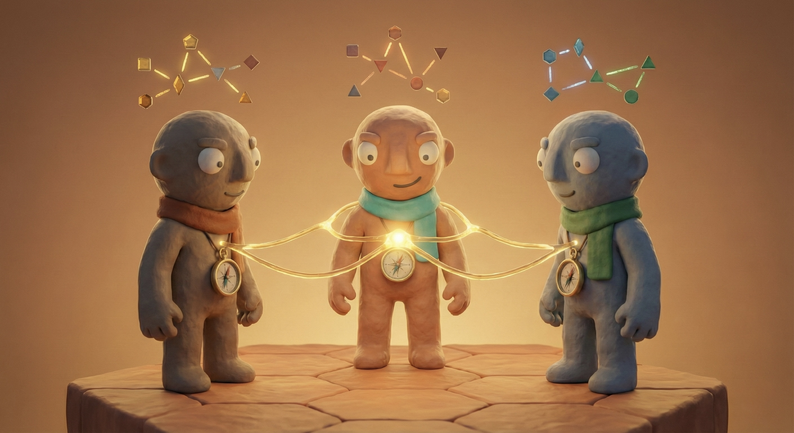
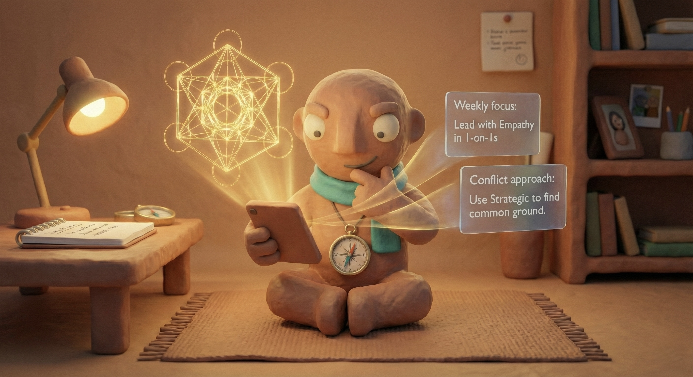

Vom Testergebnis
zur Team-Excellence.
Wie Du aus CliftonStrengths-Berichten ein Team baust, das messbar besser zusammenarbeitet — in vier Wochen.

Heroische Führung skaliert nicht mehr.
- Alle Antworten kommen von oben.
- Eine Person trägt die ganze Last.
- Reaktiv, nicht strategisch.
- Wissen konzentriert sich beim Chef.
- Kollektive Intelligenz orchestrieren.
- Verantwortung verteilt sich im Team.
- Proaktiv, mit Raum für Strategie.
- Stärken werden sichtbar & gezielt eingesetzt.
Nur jede:r fünfte Führungskraft weltweit ist heute noch wirklich engagiert.
Zunahme bei Manager:innen ggü. Mitarbeitenden ohne Führungsverantwortung.
Psychologische Sicherheit schlägt Talent.
Google hat fünf Jahre lang 180 Teams vermessen. Der größte Hebel war nicht der IQ, nicht das Skill-Set — sondern wie die Teams miteinander reden.

Die provokanteste Frage im Management.
Autobahn vs. Feldweg.
Arbeiten in Ihren Stärken. Energetisierend. Geringe kognitive Last. Ihr Gehirn hat diesen Weg über Jahre aufgebaut.
Eine Schwäche erzwingen. Hohe kognitive Last. Sie ziehen einen Ferrari durch den Schlamm.
Neuronen, die gemeinsam feuern, vernetzen sich — Hebb'sches Gesetz, 1949. Stärken sind breite, schnelle neuronale Bahnen, die über Jahre entstanden sind.
Schwächen zu erzwingen kostet das Dreifache an kognitiver Energie. Führung im Flow bedeutet: Stärken einsetzen wo möglich, Schwächen managen durch Delegation.
Jeder Feldweg in Ihrem Team ist die Autobahn eines anderen Teammitglieds. Das ist der Kern von Strengths-basierter Delegation.
Stärken-fokussierte Teams liefern messbar mehr.
Stärken multiplizieren — nicht Schwächen reparieren.
Du hast den Test gemacht. Und jetzt?
Millionen Reports liegen in Schubladen. Ein kurzer „Aha-Moment" — dann die gleichen Meetings, die gleiche Reibung.
zu „Wir verschalten unsere Stärken als Team."
Deine Stärken in vier Clustern.
Wo fließt deine Energie?
Drei Hebel, um 30% deiner Woche zurückzugewinnen.
Wann warst du zuletzt im Flow?
Wie Teams wirklich zusammenarbeiten.
Nicht einzelne Stars gewinnen — sondern kollektive Stärken, die sich gegenseitig verstärken. Tuckman zeigt wie.

Warum Star-Ensembles scheitern.
Homogene Stärken erzeugen blinde Flecken — heterogene Teams gewinnen.
Das unmögliche Problem — gelöst in 4 Stunden.
Vier Menschen, vier Stärken, ein Ziel. Collective Intelligence under pressure.
Schnell vs. Langsam.
- Schnell und automatisch
- Emotional gesteuert
- Geringe kognitive Last
- Muster-basiert — Erfahrung
- Langsam und bewusst
- Rational gesteuert
- Hohe kognitive Last
- Regelbasiert — Logik
Impulsiv vs. Bedacht.
- Entscheidet sofort, korrigiert danach.
- „Done is better than perfect."
- Hält Meetings kurz und energetisch.
- Sichert das Marktfenster.
- Analysiert erst, entscheidet dann.
- „Was könnten wir übersehen?"
- Schreibt Agendas, will Vorlaufzeit.
- Sichert Qualität und Reputation.
Organisiert vs. Agil.
- Liebt Systeme, Pläne und Prozesse.
- Zuverlässig und konsistent.
- Skalierbarkeit durch Struktur.
- Braucht Klarheit und Vorbereitung.
- Reagiert auf Wandel, nicht auf Pläne.
- Findet in jedem Moment das Beste.
- Kein langer Vorlauf nötig.
- Resilience in Krisen.
Vier Dimensionen — ein gemeinsames Bild.
The Strength Hack — dein persönliches Cockpit.
Das Destillat aus Seligman, Clifton und Kahneman — übersetzt in einen 4-Wochen-Sprint für Führungsteams.
